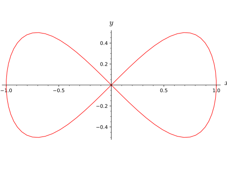

Given a differentiable manifold \(M\), a differentiable curve in
\(M\) is a differentiable map
\[\gamma: I \longrightarrow M,\]
where \(I\) is an interval of \(\RR\).
INPUT:
parent –
DifferentiableCurveSet
the set of curves \(\mathrm{Hom}(I, M)\) to which the curve belongs
coord_expression – (default: None) dictionary (possibly empty)
of the functions of the curve parameter \(t\) expressing the curve in
various charts of \(M\), the keys of the dictionary being the charts and
the values being lists or tuples of \(n\) symbolic expressions of \(t\),
where \(n\) is the dimension of \(M\)
name – (default: None) string; symbol given to the curve
latex_name – (default: None) string; LaTeX symbol to denote
the curve; if none is provided, name will be used
is_isomorphism – (default: False) determines whether the
constructed object is a diffeomorphism; if set to True,
then \(M\) must have dimension one
is_identity – (default: False) determines whether the
constructed object is the identity map; if set to True,
then \(M\) must be the interval \(I\)
EXAMPLES:
The lemniscate of Gerono in the 2-dimensional Euclidean plane:
sage: M=Manifold(2,'M')sage: X.<x,y>=M.chart()sage: t=var('t')sage: c=M.curve({X:[sin(t),sin(2*t)/2]},(t,0,2*pi),name='c');cCurve c in the 2-dimensional differentiable manifold Msage: type(c)<class 'sage.manifolds.differentiable.manifold_homset.DifferentiableCurveSet_with_category.element_class'>
Instead of declaring the parameter \(t\) as a symbolic variable by means
of var('t'), it is equivalent to get it as the canonical coordinate
of the real number line (see
RealLine):
sage: R.<t>=manifolds.RealLine()sage: c=M.curve({X:[sin(t),sin(2*t)/2]},(t,0,2*pi),name='c');cCurve c in the 2-dimensional differentiable manifold M
A graphical view of the curve is provided by the method plot():
sage: c.plot(aspect_ratio=1)Graphics object consisting of 1 graphics primitive

Curves are considered as (manifold) morphisms from real intervals to
differentiable manifolds:
sage: c.parent()Set of Morphisms from Real interval (0, 2*pi) to 2-dimensional differentiable manifold M in Category of smooth manifolds over Real Field with 53 bits of precisionsage: I=R.open_interval(0,2*pi)sage: c.parent()isHom(I,M)Truesage: c.domain()Real interval (0, 2*pi)sage: c.domain()isITruesage: c.codomain()2-dimensional differentiable manifold M
Accordingly, all methods of
DiffMap are available
for them. In particular, the method
display()
shows the coordinate representations in various charts of manifold M:
sage: c.display()c: (0, 2*pi) → M t ↦ (x, y) = (sin(t), 1/2*sin(2*t))
Another map method is using the usual call syntax, which returns
the image of a point in the curve’s domain:
sage: t0=pi/2sage: I(t0)Point on the Real number line ℝsage: c(I(t0))Point on the 2-dimensional differentiable manifold Msage: c(I(t0)).coord(X)(1, 0)
For curves, the value of the parameter, instead of the corresponding
point in the real line manifold, can be passed directly:
sage: c(t0)Point c(1/2*pi) on the 2-dimensional differentiable manifold Msage: c(t0).coord(X)(1, 0)sage: c(t0)==c(I(t0))True
Instead of a dictionary of coordinate expressions, the curve can be
defined by a single coordinate expression in a given chart:
sage: c=M.curve([sin(t),sin(2*t)/2],(t,0,2*pi),chart=X,name='c');cCurve c in the 2-dimensional differentiable manifold Msage: c.display()c: (0, 2*pi) → M t ↦ (x, y) = (sin(t), 1/2*sin(2*t))
Since X is the default chart on M, it can be omitted:
sage: c=M.curve([sin(t),sin(2*t)/2],(t,0,2*pi),name='c');cCurve c in the 2-dimensional differentiable manifold Msage: c.display()c: (0, 2*pi) → M t ↦ (x, y) = (sin(t), 1/2*sin(2*t))
Note that a curve in \(M\) can also be created as a differentiable
map \(I \to M\):
sage: c1=I.diff_map(M,coord_functions={X:[sin(t),sin(2*t)/2]},....: name='c');c1Curve c in the 2-dimensional differentiable manifold Msage: c1.parent()isc.parent()Truesage: c1==cTrue
LaTeX symbols representing a curve:
sage: c=M.curve([sin(t),sin(2*t)/2],(t,0,2*pi))sage: latex(c)\text{Curve in the 2-dimensional differentiable manifold M}sage: c=M.curve([sin(t),sin(2*t)/2],(t,0,2*pi),name='c')sage: latex(c)csage: c=M.curve([sin(t),sin(2*t)/2],(t,0,2*pi),name='c',....: latex_name=r'\gamma')sage: latex(c)\gamma
The curve’s tangent vector field (velocity vector):
sage: v=c.tangent_vector_field();vVector field c' along the Real interval (0, 2*pi) with values on the 2-dimensional differentiable manifold Msage: v.display()c' = cos(t) ∂/∂x + (2*cos(t)^2 - 1) ∂/∂y
sage: v.at(R(pi))Tangent vector c' at Point on the 2-dimensional differentiable manifold Msage: v.at(R(pi))inM.tangent_space(c(R(pi)))Truesage: v.at(R(pi)).display()c' = -∂/∂x + ∂/∂y
Curves \(\RR \to \RR\) can be composed: the operator \(\circ\) is
given by *:
sage: f=R.curve(t^2,(t,-oo,+oo))sage: g=R.curve(cos(t),(t,-oo,+oo))sage: s=g*f;sDifferentiable map from the Real number line ℝ to itselfsage: s.display()ℝ → ℝ t ↦ cos(t^2)sage: s=f*g;sDifferentiable map from the Real number line ℝ to itselfsage: s.display()ℝ → ℝ t ↦ cos(t)^2
Curvature and torsion of a curve in a Riemannian manifold
Let us consider a helix \(C\) in the Euclidean space \(\mathbb{E}^3\)
parametrized by its arc length \(s\):
Since \(C\) is parametrized by its arc length \(s\), \(T\) is a unit vector (with
respect to the Euclidean metric of \(\mathbb{E}^3\)):
sage: norm(T)Scalar field |C'| on the Real interval (0, 6*pi)sage: norm(T).display()|C'|: (0, 6*pi) → ℝ s ↦ 1
Vector fields along \(C\) are defined by the method
vector_field()
of the domain of \(C\) with the keyword argument dest_map set to \(C\). For
instance the derivative vector \(T'=\mathrm{d}T/\mathrm{d}s\) is:
while the binormal vector along \(C\) is \(B = T \times N\):
sage: B=T.cross_product(N)sage: BVector field along the Real interval (0, 6*pi) with values on the Euclidean space E^3sage: B.display()1/3*sqrt(5)*sin(1/3*s) e_x - 1/3*sqrt(5)*cos(1/3*s) e_y + 2/3 e_z
The three vector fields \((T, N, B)\) form the Frenet-Serret frame along
\(C\):
sage: FS=I.vector_frame(('T','N','B'),(T,N,B),....: symbol_dual=('t','n','b'))sage: FSVector frame ((0, 6*pi), (T,N,B)) with values on the Euclidean space E^3
Return the coordinate functions expressing the curve in a given chart.
INPUT:
chart – (default: None) chart on the curve’s codomain; if
None, the codomain’s default chart is assumed
OUTPUT:
symbolic expression representing the curve in the above chart
EXAMPLES:
Cartesian and polar expression of a curve in the Euclidean plane:
sage: M=Manifold(2,'R^2',r'\RR^2')# the Euclidean plane R^2sage: c_xy.<x,y>=M.chart()# Cartesian coordinate on R^2sage: U=M.open_subset('U',coord_def={c_xy:(y!=0,x<0)})# the complement of the segment y=0 and x>0sage: c_cart=c_xy.restrict(U)# Cartesian coordinates on Usage: c_spher.<r,ph>=U.chart(r'r:(0,+oo) ph:(0,2*pi):\phi')# spherical coordinates on U
Links between spherical coordinates and Cartesian ones:
sage: ch_cart_spher=c_cart.transition_map(c_spher,[sqrt(x*x+y*y),atan2(y,x)])sage: ch_cart_spher.set_inverse(r*cos(ph),r*sin(ph))Check of the inverse coordinate transformation: x == x *passed* y == y *passed* r == r *passed* ph == arctan2(r*sin(ph), r*cos(ph)) **failed**NB: a failed report can reflect a mere lack of simplification.sage: R.<t>=manifolds.RealLine()sage: c=U.curve({c_spher:(1,t)},(t,0,2*pi),name='c')sage: c.coord_expr(c_spher)(1, t)sage: c.coord_expr(c_cart)(cos(t), sin(t))
Since c_cart is the default chart on U, it can be omitted:
Plot the current curve in a Cartesian graph based on the
coordinates of some ambient chart.
The curve is drawn in terms of two (2D graphics) or three (3D graphics)
coordinates of a given chart, called hereafter the ambient chart.
The ambient chart’s domain must overlap with the curve’s codomain or
with the codomain of the composite curve \(\Phi\circ c\), where \(c\) is
the current curve and \(\Phi\) some manifold differential map (argument
mapping below).
INPUT:
chart – (default: None) the ambient chart (see above);
if None, the default chart of the codomain of the curve (or of
the curve composed with \(\Phi\)) is used
ambient_coords – (default: None) tuple containing the 2
or 3 coordinates of the ambient chart in terms of which the plot
is performed; if None, all the coordinates of the ambient chart
are considered
mapping – (default: None) differentiable mapping \(\Phi\)
(instance of
DiffMap)
providing the link between the curve and the ambient chart chart
(cf. above); if None, the ambient chart is supposed to be defined
on the codomain of the curve.
prange – (default: None) range of the curve parameter for
the plot; if None, the entire parameter range declared during the
curve construction is considered (with -Infinity
replaced by -max_range and +Infinity by max_range)
include_end_point – (default: (True,True)) determines
whether the end points of prange are included in the plot
end_point_offset – (default: (0.001,0.001)) offsets from
the end points when they are not included in the plot: if
include_end_point[0]==False, the minimal value of the curve
parameter used for the plot is prange[0]+end_point_offset[0],
while if include_end_point[1]==False, the maximal value is
prange[1]-end_point_offset[1].
max_range – (default: 8) numerical value substituted to
+Infinity if the latter is the upper bound of the parameter range;
similarly -max_range is the numerical valued substituted for
-Infinity
parameters – (default: None) dictionary giving the numerical
values of the parameters that may appear in the coordinate expression
of the curve
color – (default: ‘red’) color of the drawn curve
style – (default: ‘-’) color of the drawn curve; NB: style
is effective only for 2D plots
thickness – (default: 1) thickness of the drawn curve
plot_points – (default: 75) number of points to plot the curve
label_axes – (default: True) boolean determining whether the
labels of the coordinate axes of chart shall be added to the
graph; can be set to False if the graph is 3D and must be
superposed with another graph.
aspect_ratio – (default: 'automatic') aspect ratio of the
plot; the default value ('automatic') applies only for 2D plots;
for 3D plots, the default value is 1 instead
OUTPUT:
a graphic object, either an instance of
Graphics for a 2D plot (i.e. based on
2 coordinates of chart) or an instance of
Graphics3d for a 3D plot (i.e.
based on 3 coordinates of chart)
Return the tangent vector field to the curve (velocity vector).
INPUT:
name – (default: None) string; symbol given to the tangent
vector field; if none is provided, the primed curve symbol (if any)
will be used
latex_name – (default: None) string; LaTeX symbol to denote
the tangent vector field; if None then (i) if name is
None as well, the primed curve LaTeX symbol (if any) will be
used or (ii) if name is not None, name will be used
OUTPUT:
the tangent vector field, as an instance of
VectorField
EXAMPLES:
Tangent vector field to a circle curve in \(\RR^2\):
sage: M=Manifold(2,'R^2')sage: X.<x,y>=M.chart()sage: R.<t>=manifolds.RealLine()sage: c=M.curve([cos(t),sin(t)],(t,0,2*pi),name='c')sage: v=c.tangent_vector_field();vVector field c' along the Real interval (0, 2*pi) with values on the 2-dimensional differentiable manifold R^2sage: v.display()c' = -sin(t) ∂/∂x + cos(t) ∂/∂ysage: latex(v){c'}sage: v.parent()Free module X((0, 2*pi),c) of vector fields along the Real interval (0, 2*pi) mapped into the 2-dimensional differentiable manifold R^2
Value of the tangent vector field for some specific value of the
curve parameter (\(t = \pi\)):
sage: R(pi)inc.domain()# pi in (0, 2*pi)Truesage: vp=v.at(R(pi));vpTangent vector c' at Point on the 2-dimensional differentiable manifold R^2sage: vp.parent()isM.tangent_space(c(R(pi)))Truesage: vp.display()c' = -∂/∂y
Tangent vector field to a curve in a non-parallelizable manifold (the
2-sphere \(S^2\)): first, we introduce the 2-sphere:
sage: M=Manifold(2,'M')# the 2-dimensional sphere S^2sage: U=M.open_subset('U')# complement of the North polesage: c_xy.<x,y>=U.chart()# stereographic coordinates from the North polesage: V=M.open_subset('V')# complement of the South polesage: c_uv.<u,v>=V.chart()# stereographic coordinates from the South polesage: M.declare_union(U,V)# S^2 is the union of U and Vsage: xy_to_uv=c_xy.transition_map(c_uv,(x/(x^2+y^2),y/(x^2+y^2)),....: intersection_name='W',restrictions1=x^2+y^2!=0,....: restrictions2=u^2+v^2!=0)sage: uv_to_xy=xy_to_uv.inverse()sage: W=U.intersection(V)sage: A=W.open_subset('A',coord_def={c_xy.restrict(W):(y!=0,x<0)})sage: c_spher.<th,ph>=A.chart(r'th:(0,pi):\theta ph:(0,2*pi):\phi')# spherical coordinatessage: spher_to_xy=c_spher.transition_map(c_xy.restrict(A),....: (sin(th)*cos(ph)/(1-cos(th)),sin(th)*sin(ph)/(1-cos(th))))sage: spher_to_xy.set_inverse(2*atan(1/sqrt(x^2+y^2)),atan2(y,x),check=False)
Then we define a curve (a loxodrome) by its expression in terms of
spherical coordinates and evaluate the tangent vector field:
sage: R.<t>=manifolds.RealLine()sage: c=M.curve({c_spher:[2*atan(exp(-t/10)),t]},(t,-oo,+oo),....: name='c');cCurve c in the 2-dimensional differentiable manifold Msage: vc=c.tangent_vector_field();vcVector field c' along the Real number line ℝ with values on the 2-dimensional differentiable manifold Msage: vc.parent()Module X(ℝ,c) of vector fields along the Real number line ℝ mapped into the 2-dimensional differentiable manifold Msage: vc.display(c_spher.frame().along(c.restrict(R,A)))c' = -1/5*e^(1/10*t)/(e^(1/5*t) + 1) ∂/∂th + ∂/∂ph